01Child care
五顆心，
照顧每一天。
專業保育照顧，靠的是五顆心：
愛心細心耐心貼心同理心
從量體溫、吃蔬果到換衣服、安撫情緒，老師把孩子在學校的每一件小事都放在心上。
-
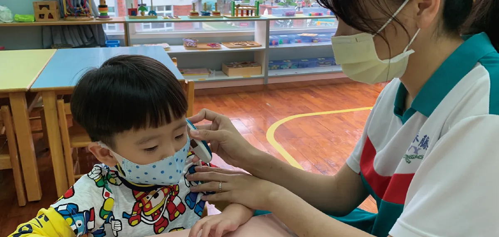
-
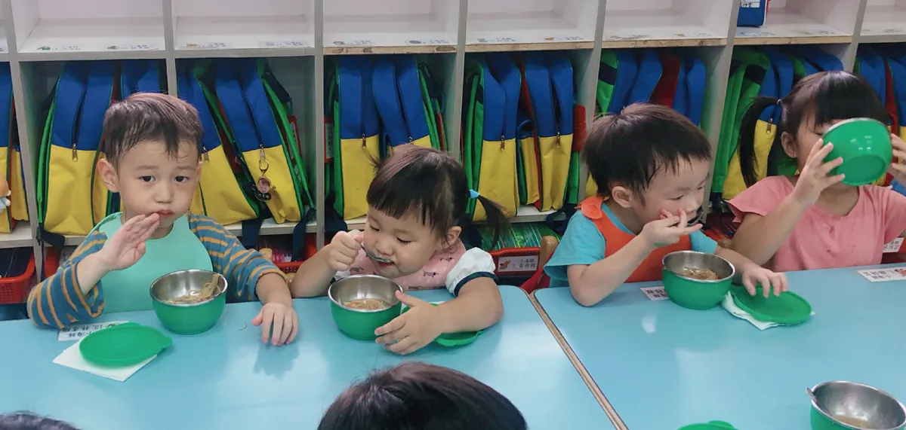
-
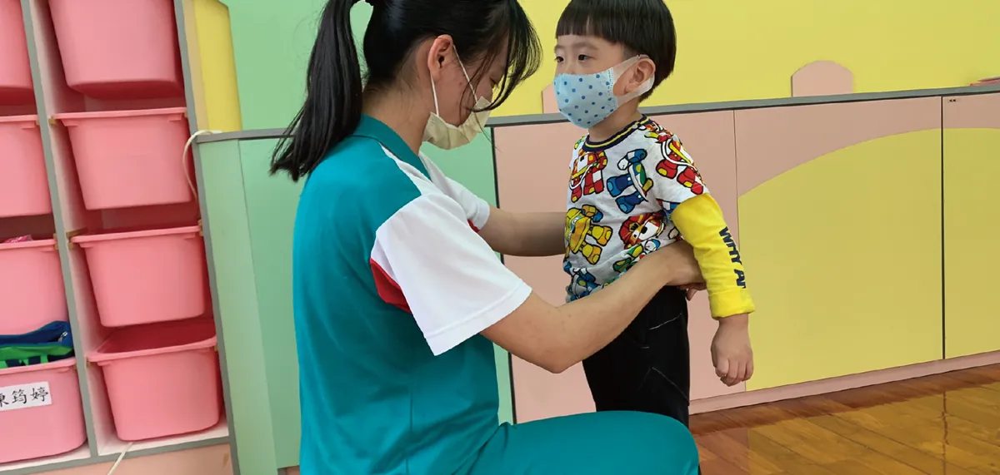
-
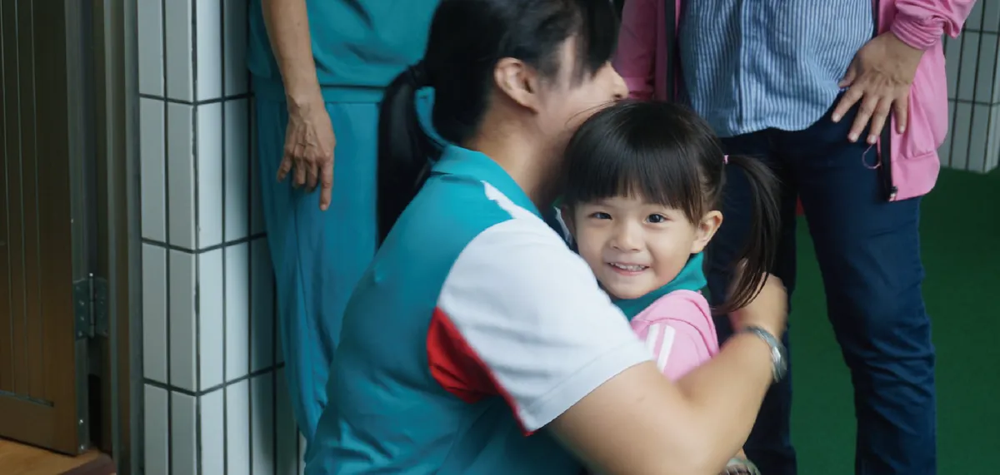
02Our spaces
把安全與好奇，
放進每個角落。
從教室、教具、衛廁到戶外廣場，每個空間都以孩子的安全與探索為出發點。
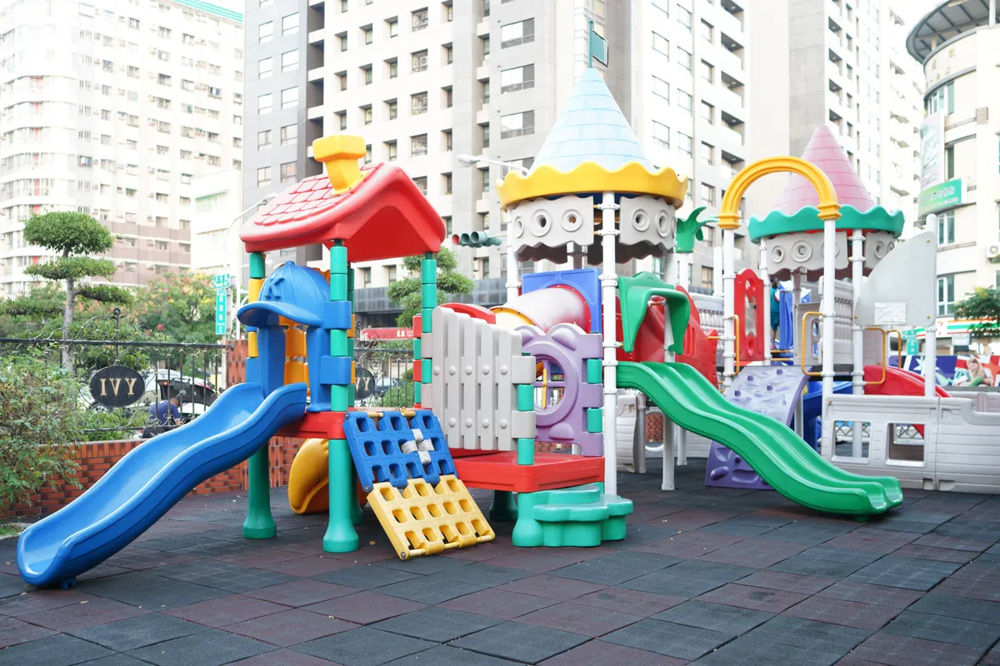
在遊戲裡，
慢慢長大。
遊戲幫助寶貝成長發育，發展精細動作、激發想像力、提升手眼協調力，讓寶貝開心、健康、快樂地成長。
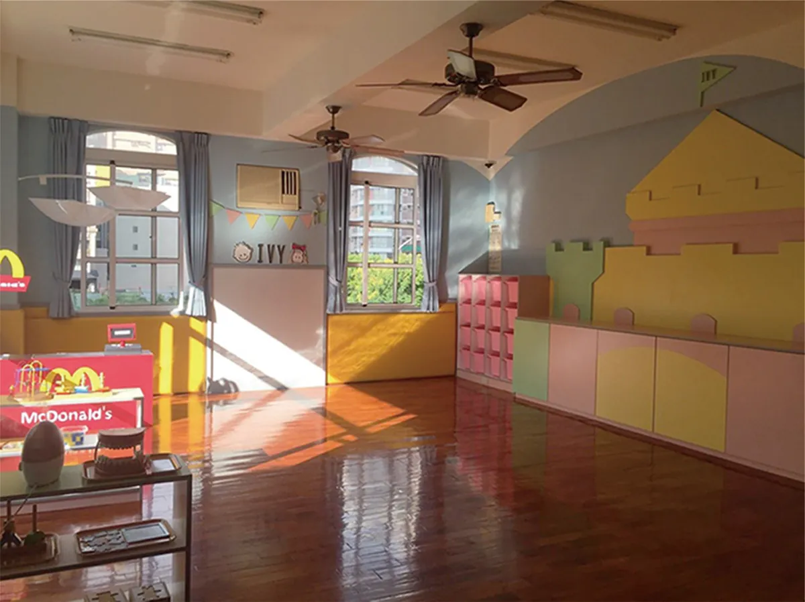
乾淨溫馨的教室
課程統整，全方位主題教學，帶領孩子走出戶外，接觸大自然。
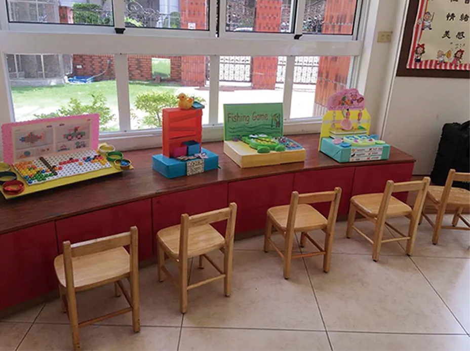
多樣操作教具
多樣性教具提升寶貝邏輯思維；多元玩法搭配豐富內容，讓寶貝養成自主學習的好習慣。
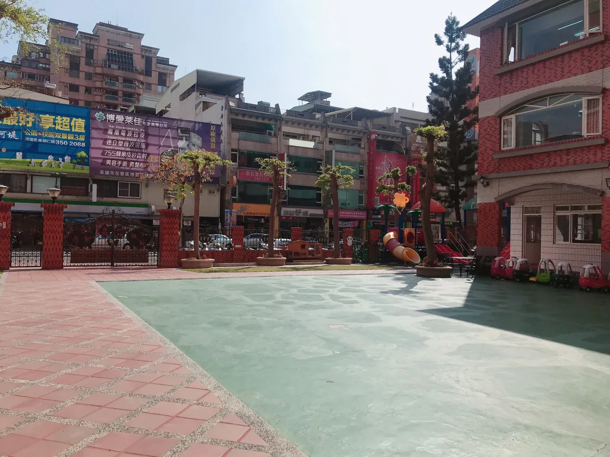
明華校戶外廣場
寬敞明亮的大廣場，給予寶貝充足的空間伸展肢體、跑跑跳跳，讓寶貝贏在人生的起跑點！
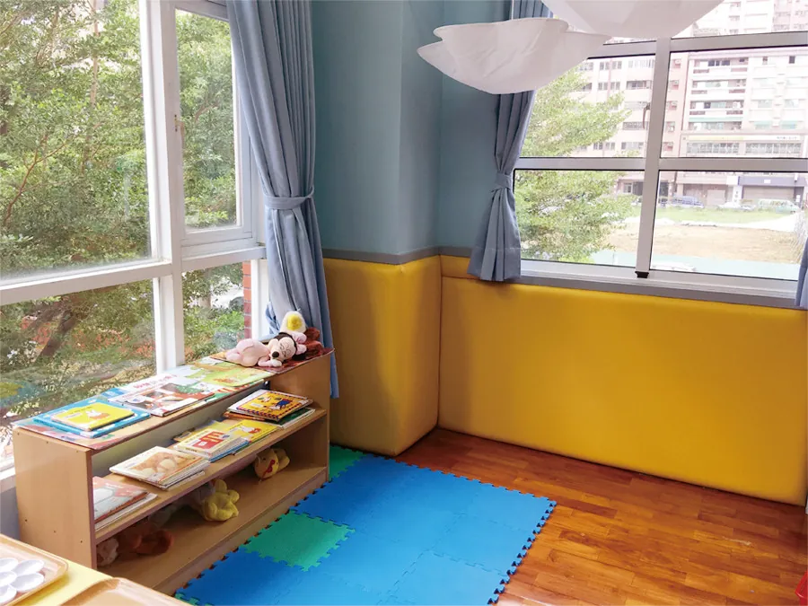
安全角落設計
厚軟墊防撞設計，加強角落安全性，寶貝唱唱跳跳好開心。
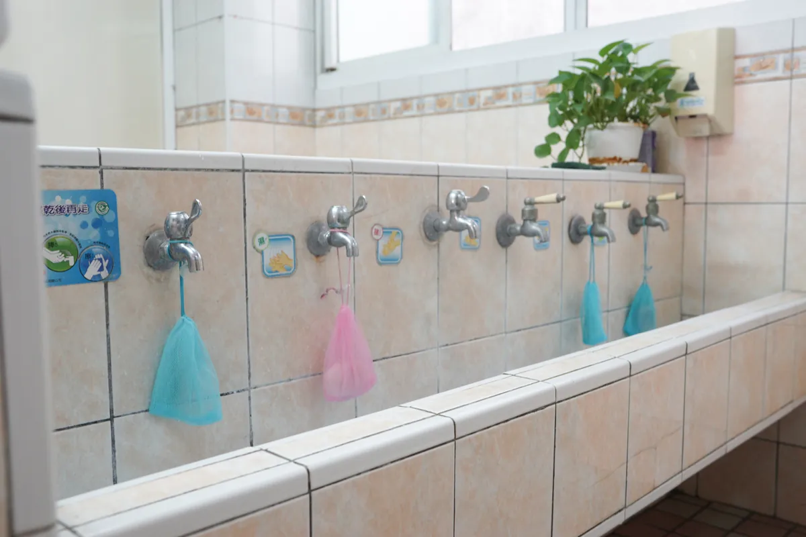
套房式衛廁
連接教室的套房式衛廁，時刻注意寶貝的安全及如廁狀況；安心環境幫助幼幼寶貝快速戒除尿布好放心！
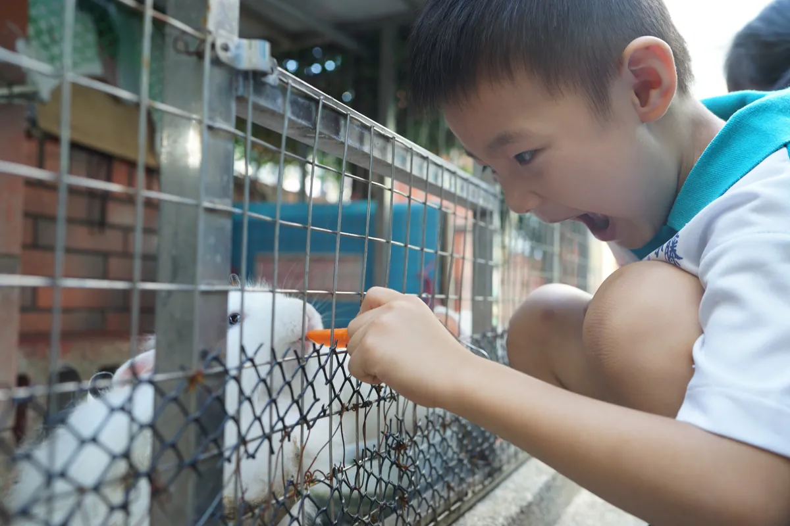
可愛動物區
可愛動物區激發寶貝主動探索大自然生態的熱情與動力，培養責任心與好奇心。
03Meals
多一點天然，
少一點加工。
每日餐點符合營養標準，廚房每天現煮，讓孩子吃到食物最原始的味道。每個月的菜單，都收在常春藤營養餐點書裡。
- 早餐早餐美語
營養好吃的早餐，讓孩子有精神、有活力。
- 香蕉每日兩蔬果
- 午餐廚房每天現煮
最新鮮、最營養的午餐，健健康康長大。
- 蘋果每日兩蔬果
- 點心西米露、玉米粥
即便是點心，也是豐盛的正餐。
每日兩蔬果，增進免疫、提升孩子的健康。